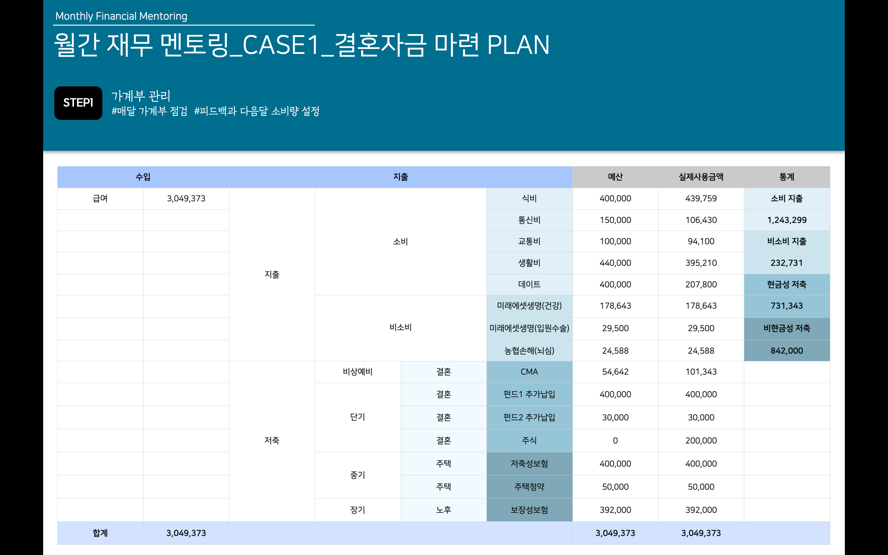
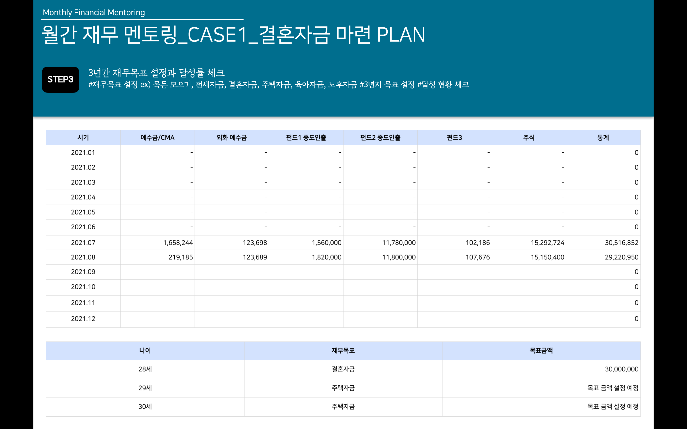

- STEP1
- STEP2
- STEP3
Monica's money recipe
안녕하세요. 미래에셋 금융서비스 손수지 FC입니다.
⭐️STEP1 가계부 관리⭐️
매달 가계부 점검을 합니다. 잘 통제한 달과 그렇지 못한달이 있겠죠! 그 달의 피드백으로 다음달 소비량을 정합니다.
⭐️STEP2 저축/투자 상품 관리⭐️
매달 저축할 수 있는 금액을 정해, 잘 달성 했는지 점검하고 분기별로 추적합니다. 그 과정에서 어떤 금융 상품으로 저축/투자 할지 성향에 따라 금융 상품을 설정하고 수익률 관리를 돕습니다.
(매월 적립식 투자 and 목돈 거치식 투자)
⭐️STEP3 3년간 재무목표 설정과 달성률 체크⭐️
STEP1과 STEP2를 통해 우리가 인생을 살면서 맞이하게 될 재무목표(씨드머니 모으기, 전세자금, 결혼자금, 주택자금, 육아자금, 노후자금 등)를 효과적으로 달성하기 위해 3년간의 목표를 같이 설정하고 달성 현황을 체크합니다.